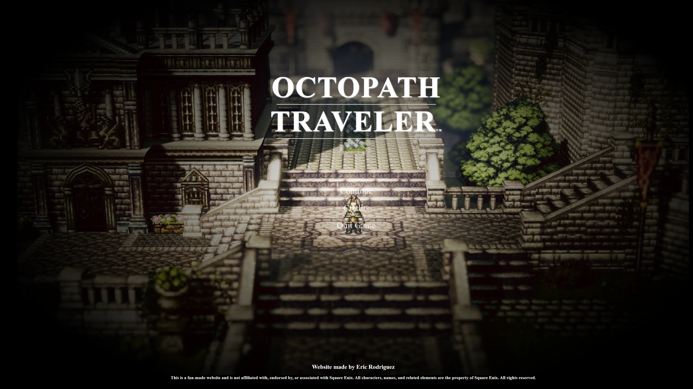
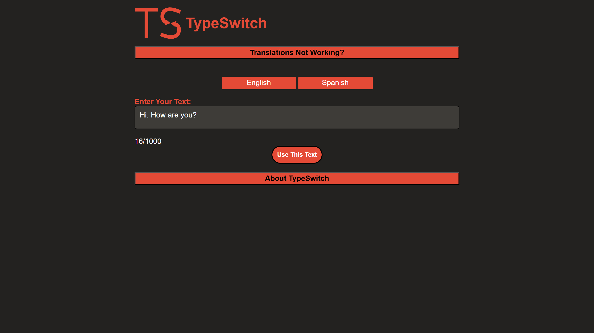
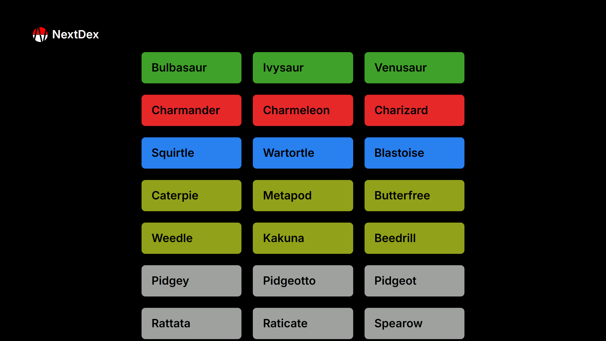

My Websites

Remaking Octopath Traveler's UI
This was a project I started with the primary goal of learning about UI/UX through recreation.
Octopath Traveler is one of my favorite games, so I wanted to see how well I could recreate some UI elements from the game, and in the process, perhaps learn why certain decisions were made.

TypeSwitch
I created this project as an application to grow with Google's Translation API. Aiming to improve my Spanish writing, I developed it to help me learn the language in context. Since the API supports 18 language pairs, I added that feature for others to use as well.

NextDex
I created this website to improve my React.js skills and work with server-side rendering using Next.js. As a Pokémon fan, building a Pokédex was a natural choice. I aim to make it a fluid and eye-catching website.
Game Projects
MonsterMon
VR Monster Catching Simulator
Other Projects
SU Social
Social Media app for Syracuse University Students